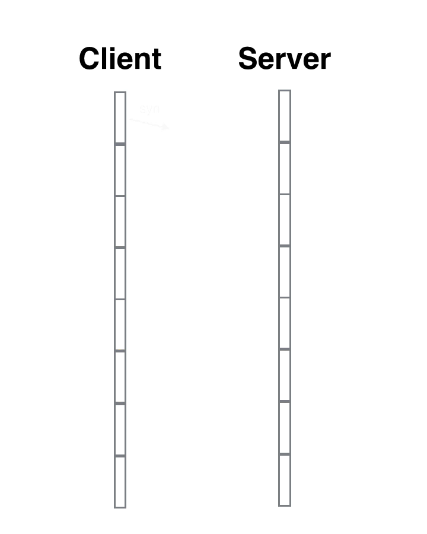
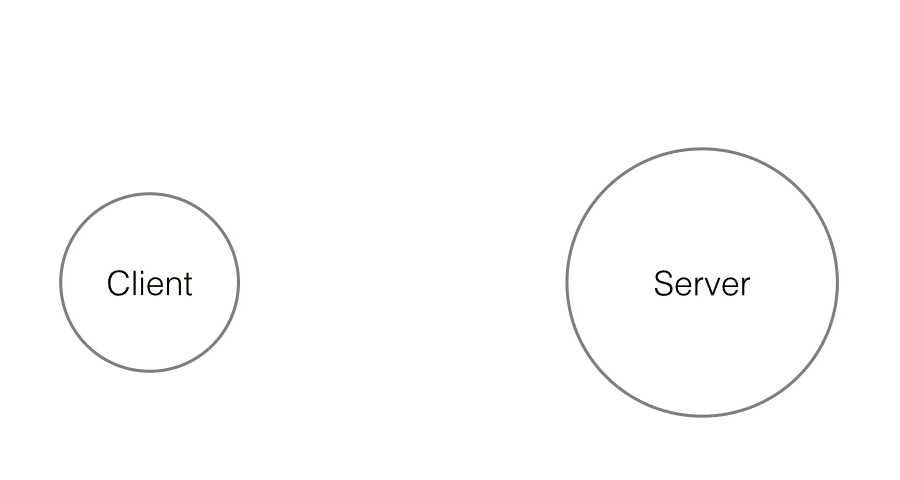
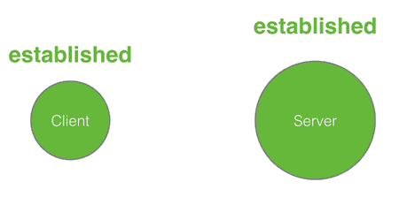

第八章 TCP/IP协议
TCP/IP体系结构
- TCP/IP协议的网络层的主要功能是寻址、数据打包和路由选择
- 主要协议有：地址解析协议（ARP）、反向地址解析协议（RARP）、网际协议（IP）、Internet控制消息协议（ICMP）和Internet组管理协议（IGMP）
- ARP负责将IP地址解析为结点的物理地址，以便于物理设备（如网卡）按该地址接收数据
- RARP负责将物理地址解析成IP地址，这个协议主要是针对无盘工作站获得IP地址而设计的
- ICMP用于传送差错报文及其他控制信息
网际协议IP
- IP协议是TCP/IP协议族中的核心协议。所有的TCP、UDP、ICMP、IGMP数据都是以IP数据报格式传输的
- IP协议为高层提供不可靠、无连接的数据报通信。尽最大努力交付
IP地址：网络中的每个独立主机的每个接口必须有一个唯一的Internet地址，也称为IP地址。IP地址长度为32位。表示地址空间是$2^{32}$
IP地址的表示方法
- 二进制表示方法
- 点分十进制表示方法：为了使32位地址更加简介和更容易阅读，因特网的地址通常写成用小数点把各字节分隔开的形式。每个字节用一个十进制数表示，这个数小于256
- 十六进制表示方法
- 二进制表示方法：在二进制表示方法中，用一个32位的比特序列表示IP地址，为了使这个地址有更好的可读性，通常在每个字节之间加上一个或多个空格做分割。例如：
10000001 00001110 00000110 00011111，但不便于记忆
分类IP地址：IP地址按照层次结构划分成五类：A、B、C、D、E类。每一类地址都由两个固定长度的字段组成，其中第一个字段是网络号net-id，它标志主机（或路由器）所连接到的网络，而另一个字段则是主机号host-id，它标志一个主机地址。

各类IP地址的范围

助记：
0～A(128)～B(28+64)～C(128+64+32)～D(128+64+32+16)~E(128+64+32+16+8)IPv4报文格式

总长度：占16位，指首部和数据之和的长度，单位为字节。因此数据报的最大长度为65535字节。总长度必须不超过最大传送单元MTU
标识（identification）：占16位，它是一个计数器，用来产生数据报的标识
标志（flag）：占3位，目前只有前两位有意义。
- 标识字段的MF（More Fragment）。**MF=1表示后面”还有分片”**，MF=0表示最后一个分片
- 标识字段的DF（Don’t Fragment）。DF=0时表示允许分片
片偏移13位（偏移量）：较长的分组在分片后某片在原分组中的相对位置。片偏移以8个字节为偏移单位
- 例：以太网的MTU（最大传输单位）为1400字节，路由器将把到达的一个4000字节数据的报文为3段，第一段有1400字节数据，分段偏移为0；第二段有1400字节数据，分段偏移位1400÷8=175；第三段有1200字节数据，分段偏移位350
子网掩码（待补充）：IP地址 + 子网掩码 = 网络地址
特殊的IP地址
网络地址（NET-ID）：主机标识部分为全”0”的IP地址不分配给任何主机，而是作为网络本身的标识
- 例：主机 202.198.151.136所在网段的网络地址为：202.198.151.0（主机位变为0）；主机130.100.100.136（B类地址）所在网段的网络地址为：130.100.0.0
直接广播地址：主机标识全为”1”的IP地址不分配给任何主机，用做广播地址
- 例：主机 202.198.151.136所在网段的直接广播地址为：202.198.151.255（主机位变为1）；主机130.100.100.136（B类地址）所在网段的直接广播地址为：130.100.255.25
有限广播地址：32位为全为1的IP地址称为有限广播地址
- 例：有限广播地址为：255.255.255.255
主机本身地址：32位为全0的IP地址称为主机本身地址
- 例：主机本身地址：0.0.0.0
划分子网：从1985年起在IP地址中又增加了一个”子网号字段”，使两级的IP地址变成为三级的IP地址。这种做法叫做划分子网（SubNetting）。划分子网已成为因特网的正式标准协议
目前所有的主机都要求支持子网编址。子网编址不是把IP地址看成由单纯的一个网络号和一个主机号组成，而是把主机号进一步划分为一个子网号和一个主机号

当没有划分子网时，IP地址是两级结构。划分子网后，IP地址就变成了三级结构
划分子网只是把IP地址的主机号host-id这部分进行再划分，而不改变IP地址原来的网络号net-id
子网掩码（有待补充）：从一个IP地址中无法解析源主机或目的主机所连接的网络是否进行了子网划分。使用子网掩码（Subnet Mask）可以找出IP地址中的子网部分
ARP地址解析协议：就是将主机IP地址映射为硬件地址。在局域网中，网络中实际传输的单元是”数据帧”，数据帧的首部有目的主机的MAC地址。在以太网中，一个主机要和另一个主机进行直接通信，必须通过地址解析协议获得目的主机的MAC地址。ARP协议的基本功能就是通过目的设备的IP地址，查询目标设备的MAC地址（物理地址）
Internet控制报文协议ICMP[网络层]：IP协议是一种不可可靠无连接的包传输。当数据包经过多个网络传输过程中，可能出现错误、目的主机不响应、包拥塞和包丢失等。为了处理这些问题，在IP层引入了一个子协议：ICMP（Internet Control Message Protocol）
Internet组管理协议IGMP：IP地址有三种类型，分别是单播地址、广播地址和多播地址。广播和多播地址仅应用于UDP协议，它们主要应用在报文同时传送到多个接收者的情况
- 多播使用多播地址（D类IP地址）
- 当把多播通信扩展到单个网络段以外需要通过路由器转发多播数据时，复杂性就增加了。需要一个协议让多播路由器了解确定网络中属于多播组的任何一个主机。这个协议就是Internet组管理协议（IGMP）
用户数据报协议（UDP）：UDP采用非连接的方式提供应用层的事务处理，UDP不提供可靠性，也就是说，UDP协议不提供端到端的确认和重传功能，他不保证数据包一定能达到目的地，因此称为不可靠协议。UDP必须在IP上运行。他的下层协议是以IP作为前提的
传输控制协议TCP：TCP提供了一种可靠的面向连接的字节流传输层服务，TCP提供端到端的流量控制，并计算和验证一个强制性的端到端检查和。尽管TCP和UDP都使用相同的网络层（IP），TCP却向应用层提供与UDP完全不同的服务。TCP提供一种面向连接的、可靠的字节流服务。
- TCP连接的建立和释放：建立一个TCP连接需要三次握手，而释放一个TCP连接需要经过4次握手
- TCP连接的建立采用客户/服务器方式
- 主动发起连接建立的应用进程叫做客户（client）
- 被动等待连接的应用进程叫做服务器（server）
三次握手:
TCP 三次握手就好比两个人在街上隔着50米看见了对方，但是因为雾霾等原因不能100%确认，所以要通过招手的方式相互确定对方是否认识自己。
 张三首先向李四招手(syn)，李四看到张三向自己招手后，向对方点了点头挤出了一个微笑(ack)。张三看到李四微笑后确认了李四成功辨认出了自己(进入estalished状态)。
但是李四还有点狐疑，向四周看了一看，有没有可能张三是在看别人呢，他也需要确认一下。所以李四也向张三招了招手(syn)，张三看到李四向自己招手后知道对方是在寻求自己的确认，于是也点了点头挤出了微笑(ack)，李四看到对方的微笑后确认了张三就是在向自己打招呼(进入established状态)。
于是两人加快步伐，走到了一起，相互拥抱。
我们看到这个过程中一共是四个动作，张三招手–李四点头微笑–李四招手–张三点头微笑。其中李四连续进行了2个动作，先是点头微笑(回复对方)，然后再次招手(寻求确认)，实际上可以将这两个动作合一，招手的同时点头和微笑(syn+ack)。于是四个动作就简化成了三个动作，张三招手–李四点头微笑并招手–张三点头微笑。这就是三次握手的本质，中间的一次动作是两个动作的合并。
我们看到有两个中间状态，syn_sent和syn_rcvd，这两个状态叫着「半打开」状态，就是向对方招手了，但是还没来得及看到对方的点头微笑。syn_sent是主动打开方的「半打开」状态，syn_rcvd是被动打开方的「半打开」状态。客户端是主动打开方，服务器是被动打开方。
四次挥手:
TCP断开链接的过程和建立链接的过程比较类似，只不过中间的两部并不总是会合成一步走，所以它分成了4个动作，张三挥手(fin)——李四伤感地微笑(ack)——李四挥手(fin)——张三伤感地微笑(ack)。

 之所以中间的两个动作没有合并，是因为tcp存在「半关闭」状态，也就是单向关闭。张三已经挥了手，可是人还没有走，只是不再说话，但是耳朵还是可以继续听，李四呢继续喊话。等待李四累了，也不再说话了，超张三挥了挥手，张三伤感地微笑了一下，才彻底结束了。
上面有一个非常特殊的状态
time_wait，它是主动关闭的一方在回复完对方的挥手后进入的一个长期状态，这个状态标准的持续时间是4分钟，4分钟后才会进入到closed状态，释放套接字资源。不过在具体实现上这个时间是可以调整的。它就好比主动分手方要承担的责任，是你提出的要分手，你得付出代价。这个后果就是持续4分钟的
time_wait状态，不能释放套接字资源(端口)，就好比守寡期，这段时间内套接字资源(端口)不得回收利用。它的作用是重传最后一个ack报文，确保对方可以收到。因为如果对方没有收到ack的话，会重传fin报文，处于time_wait状态的套接字会立即向对方重发ack报文。
同时在这段时间内，该链接在对话期间于网际路由上产生的残留报文(因为路径过于崎岖，数据报文走的时间太长，重传的报文都收到了，原始报文还在路上)传过来时，都会被立即丢弃掉。4分钟的时间足以使得这些残留报文彻底消逝。不然当新的端口被重复利用时，这些残留报文可能会干扰新的链接。
4分钟就是2个MSL，每个MSL是2分钟。MSL就是
maximium segment lifetime——最长报文寿命。这个时间是由官方RFC协议规定的。至于为什么是2个MSL而不是1个MSL，我还没有看到一个非常满意的解释。四次挥手也并不总是四次挥手，中间的两个动作有时候是可以合并一起进行的，这个时候就成了三次挥手，主动关闭方就会从
fin_wait_1状态直接进入到time_wait状态，跳过了fin_wait_2状态。


温馨提示: 遵纪守法, 友善评论!